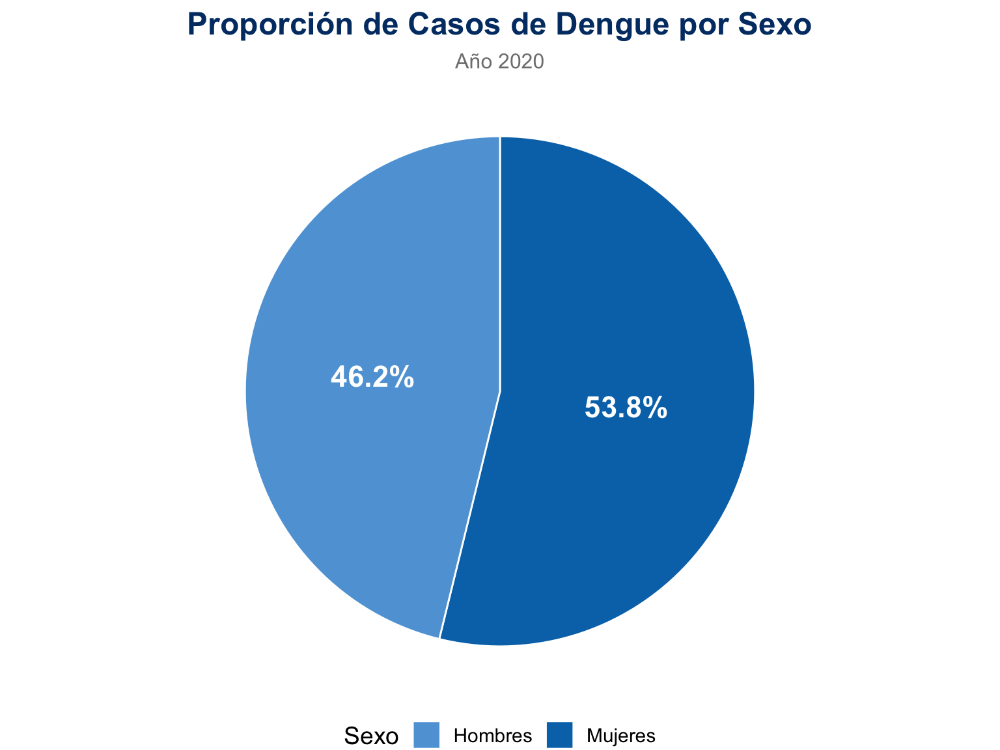
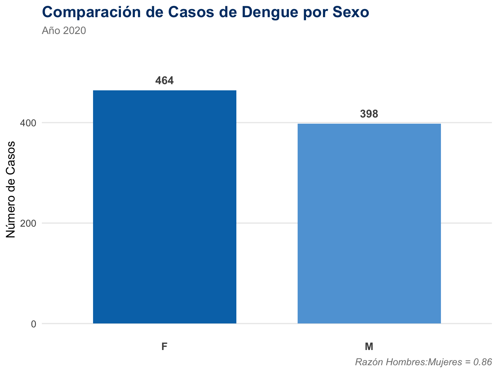

--- CÁLCULO DE PROPORCIÓN ---Proporción de casos en mujeres = 53.8% 
Cálculo y Significado de la Tasa de Incidencia
La tasa de incidencia es una de las medidas más importantes en epidemiología porque nos ayuda a entender el riesgo de que una enfermedad aparezca en una población durante un período de tiempo específico. A continuación, se detalla su cálculo y lo que significa el resultado.
Para calcular la tasa, necesitamos dos datos clave:
Número de Casos Nuevos: La cantidad total de personas que se enfermaron de dengue durante el período de estudio.
Dato: 862 casos nuevos en 2020.
Población Total en Riesgo: El número total de habitantes en el lugar y período de estudio que podrían haberse enfermado.
Dato: 51,049,498 habitantes (población de Colombia proyectada para 2020 por el DANE).
Paso 2: La Fórmula
La fórmula estándar para la tasa de incidencia es:
\[Tasa = \frac{\text{Número de Casos Nuevos}}{\text{Población Total en Riesgo}} \times \text{Factor Multiplicador}\]
El factor multiplicador (generalmente 1,000, 10,000 o 100,000) se usa para convertir el resultado en un número entero y fácil de interpretar. Para enfermedades a nivel nacional, es común usar 100,000.
Ahora, reemplazamos los datos en la fórmula:
Dividir los casos entre la población:
\[\frac{862}{51,049,498} = 0.000016885\]
Multiplicar por el factor (100,000): 0.000016885 * 100,000 = 1.6885
Redondear el resultado: ≈ 1.69
El resultado final es 1.69. Esto es lo que significa:
Durante el año 2020, en Colombia se presentaron aproximadamente 1.69 casos nuevos de dengue por cada 100,000 habitantes.
Esta cifra nos permite:
-Medir el Riesgo: Cuantifica qué tan probable fue para una persona en Colombia contraer dengue ese año.
Hacer Comparaciones: Podemos comparar esta tasa con la de años anteriores para ver si la enfermedad está aumentando o disminuyendo, o compararla con la tasa de otros países para evaluar la situación de Colombia en un contexto más amplio.
--- CÁLCULO DE PROPORCIÓN ---Proporción de casos en mujeres = 53.8% 
Elgráfico de torta, titulado “Proporción de Casos de Dengue por Sexo”, muestra cómo se distribuyeron los casos de dengue entre hombres y mujeres durante el año 2020.
Mujeres (azul oscuro): Representaron la mayoría de los casos con un 53.8%.
Hombres (azul claro): Constituyeron el 46.2% restante de los casos.
En conclusión, el gráfico evidencia que hubo una ligera mayoría de casos de dengue en mujeres en comparación con los hombres durante ese año.
CÁLCULO DE RAZÓN Razón de casos Hombres:Mujeres = 0.86 
Elgráfico “Comparación de Casos de Dengue por Sexo”, presenta las cifras absolutas de los casos de dengue reportados en el año 2020, divididos entre el sexo femenino (F) y masculino (M).
La interpretación de los datos es la siguiente:
Casos en Mujeres (F): Se reportaron 464 casos.
Casos en Hombres (M): Se reportaron 398 casos.
El gráfico muestra visualmente que hubo más casos en mujeres que en hombres.
Adicionalmente, en la esquina inferior derecha, se incluye la Razón Hombres:Mujeres = 0.86. Esto significa que por cada mujer con dengue, hubo 0.86 hombres con la enfermedad.